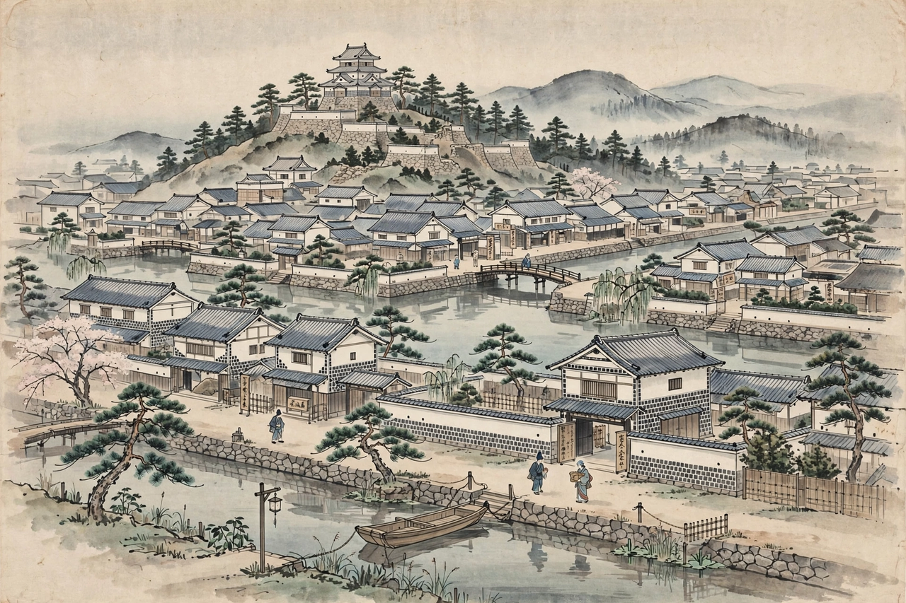

Chōshū Domain
長州藩
| Capital | Hagi, later Yamaguchi |
|---|---|
| Country | Japan (Tokugawa shogunate) |
| Daimyō clan | Mōri |
| Established | 1600 |
| Abolished | 1871 |
| Today part of | Yamaguchi Prefecture |

The Chōshū Domain (長州藩, Chōshū-han), also known as the Hagi Domain, was a domain of the Tokugawa shogunate of Japan during the Edo period from 1600 to 1871. It was based at Hagi Castle in Nagato Province, in present-day Yamaguchi Prefecture, and was ruled by the Mōri clan. Together with the Satsuma Domain, Chōshū was one of the two great domains that overthrew the Tokugawa shogunate in the Meiji Restoration.
History
The Mōri had been one of the great powers of western Japan under Mōri Terumoto, but after supporting the losing Western Army at the Battle of Sekigahara in 1600, the clan was stripped of most of its territories and confined to Nagato and Suō provinces. Resentment against the Tokugawa, whose founder had imposed this settlement, persisted in the domain for over two and a half centuries and shaped its later politics.
Bakumatsu period
In the 1860s Chōshū became the centre of the sonnō jōi ("revere the emperor, expel the barbarians") movement. Its forces fired on foreign shipping in the Shimonoseki Straits in 1863, provoking a multinational bombardment the following year, and the shogunate launched two punitive expeditions against the domain. The second expedition, in 1866, ended in a humiliating shogunal defeat at the hands of Chōshū's modernized mixed units such as Takasugi Shinsaku's Kiheitai militia.
That same year Chōshū formed the Satchō Alliance with Satsuma, mediated by Sakamoto Ryōma. Their combined imperial forces won the Boshin War and established the Meiji government. Chōshū men — including Itō Hirobumi, Yamagata Aritomo, and Kido Takayoshi — dominated the new government and the Imperial Japanese Army for decades. Many leaders travelled abroad with the Iwakura Mission. The domain was abolished in 1871 and became Yamaguchi Prefecture.